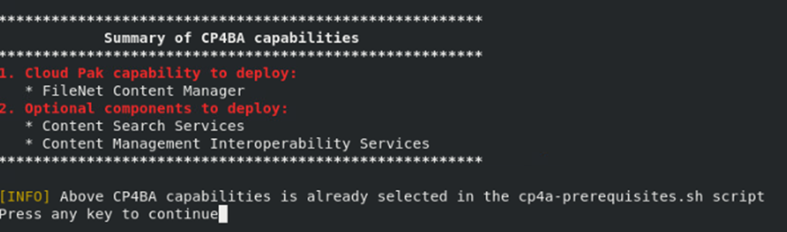

Exercise 7: Deploy CP4BA¶
7.1 Introduction¶
All of the prerequisites required for the deployment of Cloud Pak For Business Automation have been installed in the previous execises, and the configuration has been validated by running the cp4a-prerequisites.sh in validate mode.
With successful execution of the validation, the Case Package script cp4a-deployment.sh is invoked. As outlined earlier, the script detects and reuses the information made for the cp4a-prerequisites.sh script, so no real further informtion needs to be provided. The Case package script cp4a-deployment.sh generates the Custom Resource definition, which in our case is a Custom Resource of type Content. Applying it completes the deployment phase, and participants are due for a break to await further deployment done by the Cloud Pak For Business Automation Operators.
Note: When deploying only the Content-Pattern, the Case package deployment scripts now generate a Custom Resource of type Content, where a general deployment of Cloud Pak for Business Automation would use the type ICP4ACluster. Gladly, the specifications are needing same settings, with the same syntax, and there would be few, if any settings allowed in one of them, but not on the other. So, if a configuration of type Content needs to be extended by components not covered by the Content Operator, such as Business Automation Insights or Business Automation Workflow, it would be needed to change the type of the CR file accordingly, and applying it to Kubernetes, for the operator to update the environment. Take care to not change the name of the CR file, only the type.
7.2 Exercise Instructions¶
-
Switch to the Terminal window. Change to the cert-kubernetes/scripts directory.
cd $HOME/cp4ba/cert-kubernetes/scripts -
Run the deployment script.
./cp4a-deployment.sh -
Indicate that you accept the license.
-
Next question is, if in the current OCP cluster you already have a deployment of FileNet Content Manager using the deployment scripts of FileNet. The answer is "No".
-
Next question is about the kind of deployment to do. Answer is Production deployment, so select 2.
-
The script then checks to detect any previously made selection from the prerequisites script. Press Return to continue:

-
The deployment goes into an OCP environment on private cloud, so select 2.
-
The next output indicates, that the CP4BA deployment will use an internal administration account named "cpadmin". Luckily this is different from the one in our LDAP, which is cp4badmin, and also not any of the users in the LDAP. So answer "Yes" to the question whether to use this name.
-
In the next question, the script offers to use customized JDBC drivers. If that would be needed, the drivers need to be made available on a URL. In case of an Air-Gapped environment, this would mean that a webserver needs to be configured as a separate pod. As we can use the provided drivers, we can bypass the question by pressing Return.
Note: In case ICCSAP is needed in the configuration, SAP libraries for connecting to SAP need to be provided through this mechanism as well.
Note: The provided drivers are also available in the subdirectory "jdbc" of the scripts directory after deployment of the cp4ba operator.
-
Next, the script provides a summary of the configuration settings for review. Answer "Yes" to indicate the information is correct.
-
The script generates the specification file for Cloud Pak 4 Business Automation in the directory generated-cr. Navigate into this directory, and review the generated file.
cd generated-cr ls -l less ibm_content_cr_final.yaml -
Note that the deployment scripts have chosen a specification for the "Content" Custom Resource Definition, which is being worked by the Content Operator. So any error messages will be logged by the Content Operator. Other deployments of the Cloud Pak for Business Automation, which include other components, such as Business Automation Workflow would require a different kind of specification, using the "ICP4ACluster" Custom Resource Definition, which would be worked by the CP4A Operator.
Also, the "CR", the "Custom Resource" as it is called, is not always named "icp4acluster". This one has the default name "content", which you are free to change if needed. That name though will be used in many derived names, including some of the secret names, so better don’t change it for the moment.
-
For editing Custom Resources, or more general YAML files, it is good to use an editor supporting the special requirements of YAML files, and also supporting syntax highlighting. The author of this lab uses emacs for this purpose, and the yaml-mode for Emacs, which is available through open-source. Of course there are further options.
Close less by pressing ‘q’.
-
Apply the specification.
oc apply -f ibm_content_cr_final.yaml
7.3 Verification Instructions¶
At this point, the operator will start deployment according to the specification. During first half hour or so, nothing much will be notable from the working, as foundational components need to be deployed first.
If you like looking at some changing text, you can open two Terminal windows and run these two commands in them, one in each. The first one displays the pods which are defined in the current project, the second one fetches the podname of the Content Operator, and displays its logging output, thereby filtering out the lines containing the word "info".
```
watch oc get pods
oc logs $(oc get pod -l name=ibm-content-operator -o jsonpath={.items[0].metadata.name}) -f | grep -v info
```
Error messages in the logs would have red color, and typically contain keyword "failed", but not all error messages might require followup actions. For monitoring the deployment the best option might be to await the end of the current loop of the Content Operator, and start from reviewing its status, which can easily be viewed from the Openshift Console window. Refer to the Next Exercise for instructions on monitoring the deployment and on required post-deployment activity.